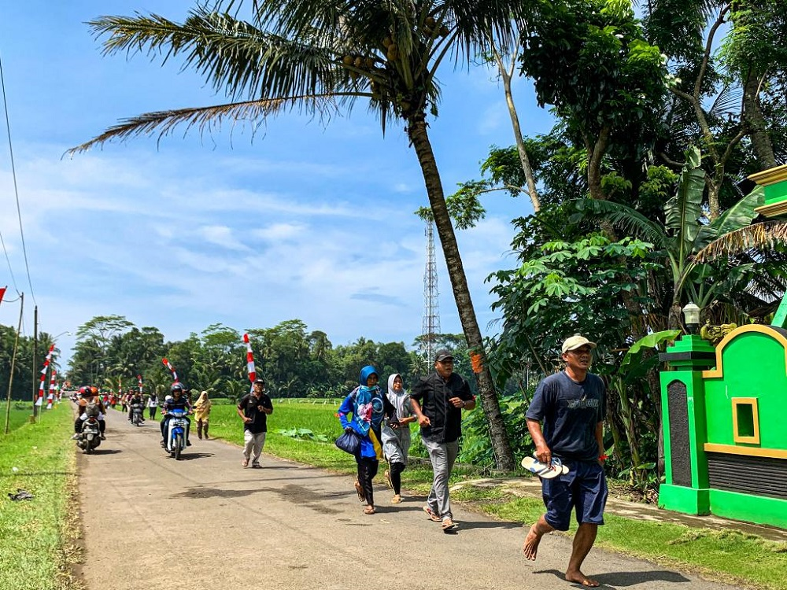

Destinasi Wisata

Sejak terjadinya bencana Tsunami pada 17 Juli 2006 terletak pada pesisir pantai selatan jawa bagian tengah pasca gempa 7,7 SR di Pengandaran. Tsunami bergelombang 5-7 meter itu terjadi sepanjang 200 km garis pantai dan menewaskan lebih dari 600 orang, termasuk di Welahan Wetan. Sebetulnya, gempa dengan kekuatan 7,7 skala Richter (SR) yang memicu gelombang tsunami, bukanlah terjadi di Cilacap melainkan di Pangandaran. Air bergerak dari arah barat yakni Pangandaran menuju ke timur yaitu Cilacap. Di Kota Cilacap tidak terasa dampaknya, ada perlindungan dari Pulau Nusakambangan. Namun, daerah yang timur Nusakambangan terdampak cukup parah, salah satunya adalah Pantai Widarapayung di Desa Widarapayung Wetan. Sehingga terdapat pembangunan ulang destinasi wisata yang ada pada wilayah Welahan Wetan.
Pantai Wagir indah

Berada di sekitar pesisir pantai selatan yang menawarkan potensi alam berupa pantai. Selain itu wilayah ini juga merupakan sentra penghasil jamu dan gula semut. Selain itu home industry yang terdapat di wilayah ini diantaranya keripik pisang dan emping.
Lapangan Waringin Indah

Lapangan ini menjadi lokasi kunjungan selanjutnya pada desa welahan wetan, karena selain diperuntukan untuk ajang sepakbola juga digunakan sebagai tempat utama event yang diadakan dalam Desa, seperti halnya memeriahkan kemerdekaan Republik Indonesia yang dilaksanakan setiap tahunnya di lapangan ini, pasar malam, Konser dan lainnya. Tidak hanya itu saja, pada area Lapangan tersebut juga terdapat tempat bersantai seperti Billiard, Cafe, Rumah makan.